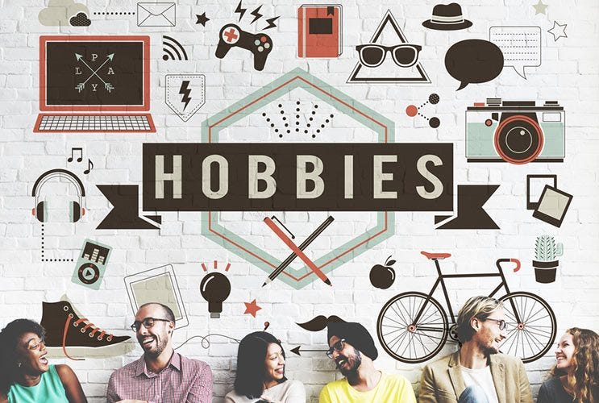

Introduction and Resume
Hobbies
Gallery
Hobbies

Traveling
I like to go places with full of nature.
I like skyrise buildings.
Ocean fishing
I love deep sea fishing, where the reel ends but not the depth.
I love fishes that go against the current
Cricket/Volleyball
Not a pro but I play on a P5 position which is also known as setter.
I'm a born right handed batsman, my favorite drill is to play straight and off-side strokes.